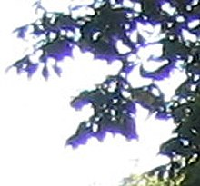

MUSICA E VIDEO MUSIC AND VIDEO
IL RISULTATO THE RESULT
COME FUNZIONA HOW DOES IT WORK
Effetto Glitch Glitch Effect
Un altro effetto carino l'ho scoperto tentando di emulare l'effetto mostrato in questo video. L'effetto si basa sul disegnare linee senza cancellare lo sfondo tra un frame e l'altro.
Oltre a questo, una linea non setta il colore della canvas, ma effettua un'operazione di xor. Questo fa in modo che le linee siano "visibili" quando sono in movimento, e spariscano quando l'animazione si ferma.
I dettagli sono esplorati in maggiore dettaglio nel video originale.
Another cool effect is one I discovered while trying to emulate the one shown in this video. The effect is based on drawing lines without ever clearing the background in between two frames.
On top of that, a line does not simply set the color of its pixels, but performs a xor operation between the background color and the line's one. This makes it so that the lines are only "visible" while they are in movement, and vanish if the animation is paused.
The details are better explored in the original video.
L'implementazione The Implementation
L'implementazione più ovvia che mi è venuta in mente all'inizio consisteva nel riscrivere una funzione line che eseguisse uno xor invece che settare il colore dei pixel.
Questo metodo è un po' proibitivo però:
The more intuitive solution that came to my mind was to rewrite the line function to perform a xor instead of setting the color of the pixels.
This method is a bit limiting tho:
- Dover implementare ogni primitiva da 0
- Essere confinati solo alle primitive riscritte
- Each primitive would need to be implemented from scratch
- Being limited to only use the primitives that were rewritten
L'implementazione che ho scelto alla fine si basa su questo processo: The implementation I chose in the end is based on this process:
Che permette di creare animazioni come queste: This allows us to create animations like these:
* Queste animazioni possono impattare le performance del browser a causa dell'utilizza di shader. Quindi sono disabilitate finché non le si clicca.
L'effetto visibile nel ultimo riquadro è quello usato nell'animazione completa per dare l'impressione che l'immagine stia "glitchando". È ottenuto ridisegnando periodicamente lo sfondo nel buffer accumulatore.
La frequenza con cui viene ridisegnato è legata all'intensità degli alti nella canzone.
* These animations can impact the performance of some browsers due to the use of shaders and WebGL. For this reason they are disabled until clicked on.
The effect shown in the last frame is the one used in the full animation to give the "glitchy" effect to the image. It is obtained by periodically drawing the background again on the accumulator buffer.
The frequency with which the background gets refreshed is tied to the high frequencies in the song.
Aberrazione Cromatica Chromatic Aberration

L'aberrazione cromatica è un fenomeno che si verifica in quasi ogni sistema ottico ed è causato direttamente dalla forma delle lenti.
L'effetto si verifica solitamente intorno ai bordi di un'immagine, e appare come la separazione dei colori che la compongono. Quelli più vicini al rosso sono spostati verso il centro dell'immagine, mentre quelli tendenti al viola vengono spinti all'esterno.
Per riprodurre l'effetto basta applicare una shader all'immagine e campionare i canali r,g, e b in punti più o meno vicini al centro.
Possiamo anche modificare l'effetto in modi creativi. Come imporre che la direzione sia costante (anzi che irradiare dal centro) e manipolarne l'intensità.
Altri scopi per cui si può usare questo effetto sono
Chromatic aberration is a phenomenon which manifests in almost every optical system and which is caused by the shape of the lenses.
The effect is usually found near the edges of an image, and appears as a distortion in the colors. The red component of the colors is shifted closer to the center of the image, and the ones closer to violet are pushed outwards.
To replicate this effect we just need to apply a shader to the image and sample the r,g, and b channels in points closer or further from the center of the image.
We can even modify the effect in more creative ways for artistic purposes. We can for example use a constant direction (instead of pointing to the center of the image) and manipulate the intensity of the shifting.
Other reasons this effect is commonly used are
- Dare l'impressione di velocità in un'immagine
- Attirare l'attenzione verso un punto focale
- Trasmettere l'idea che qualcosa sia "sbagliato" nell'immagine
- Give a sense of speed to the image
- Lead the viewer's attention towards a focal point
- Comunicate the idea that something is "wrong" in the image
ANIMAZIONE E RITMO ANIMATION AND RITHM
Per dare il ritmo all'animazione possiamo usare la FFT della canzone.
Tramite questa possiamo calcolare l'energia del segnale in diverse bande di frequenza e associare ogni uno degli effetti mostrati sopra a una di esse.
In questo caso:
To give a sense of rhythm to the animation we can use the FFT of the song.
Through this we can calculate the energy of the signal in different frequency bands, and link each of the effects shown to one of them.
In this case:
- I bassi della musica controllano la dimensione dell'oggetto. Le coordinate di ogni vertice vengono moltiplicate per uno scalare proporzionale all'energia dei bassi
- La frequenza con cui viene attivato l'effetto di "glitch" è legata all'energia degli alti
- La velocità con cui ruota l'oggetto è proporzionale all'energia totale del segnale (il volume)
- L'intensità dell'aberrazione cromatica e il colore dello sfondo sono legati ai medi e gli alti della musica
- The bass of the song alters the size of the object. The coordinates of each vertex are multiplet by a scalar proportional to the energy in the base section
- The frequency with which the glitchy effect is used is tied to the energy in the highs
- The speed with which the object spins is linked to the total energy of the signal (the volume)
- The intensity of the chromatic aberration and the change in the background color are proportional to the mid and high sections
Un'altra idea sarebbe quella di isolare i singoli strumenti di una canzone e usare quelli per gestire elementi individuali dell'animazione, al posto delle bande di frequenza.
Another possibility would be to isolate the single instruments in a song and have each of them influence a certain element of the animation, instead of relaying on frequency bands